Oil Cooler: Service and Repair
00 57 072 - Retrofitting supplementary oil cooler (high-speed scope option SA840) (N52K)

Necessary preliminary tasks:
- Read out fault memory of DME control unit
- Switch off ignition
- Remove underbody protection Removing and Installing/Replacing Front Underbody Protection
- Replace front left wheel arch trim and replace dust lip
- Replace front left trim grille
- If necessary, replace left crashbox 51 11 770 Removing and Installing/Replacing Left or Right Deformation Element For Front Bumper
- Remove air filter housing Service and Repair
- Release servo reservoir Service and Repair
- Remove alternator Service and Repair
- Remove heater bulkhead 51 71 080 Removing and Installing/Replacing Heater Bulkhead
- Drain coolant Service and Repair
- Remove oil pressure switch, remove oil filter housing
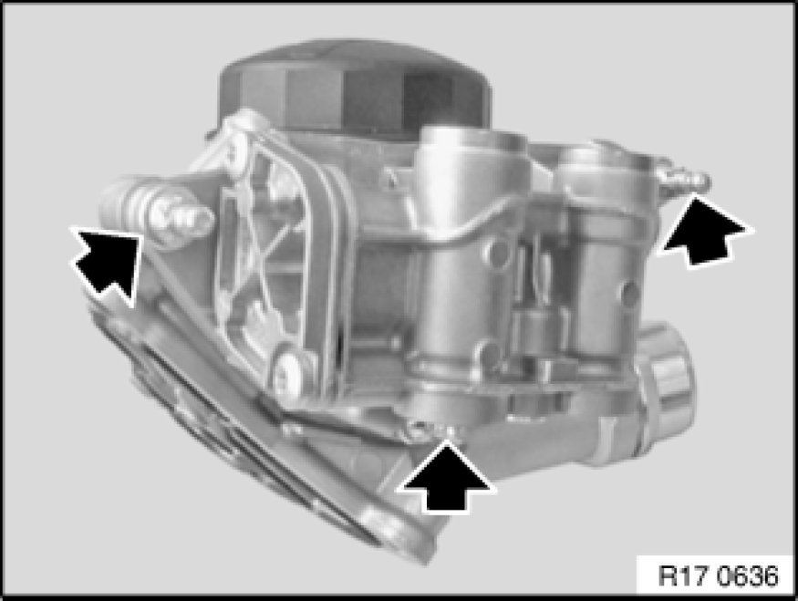
Mount full-flow oil filter and connection housing for oil lines.
Installation:
Tightening torque 11 42 3AZ 11 42 Oil Filter Element with Connections.
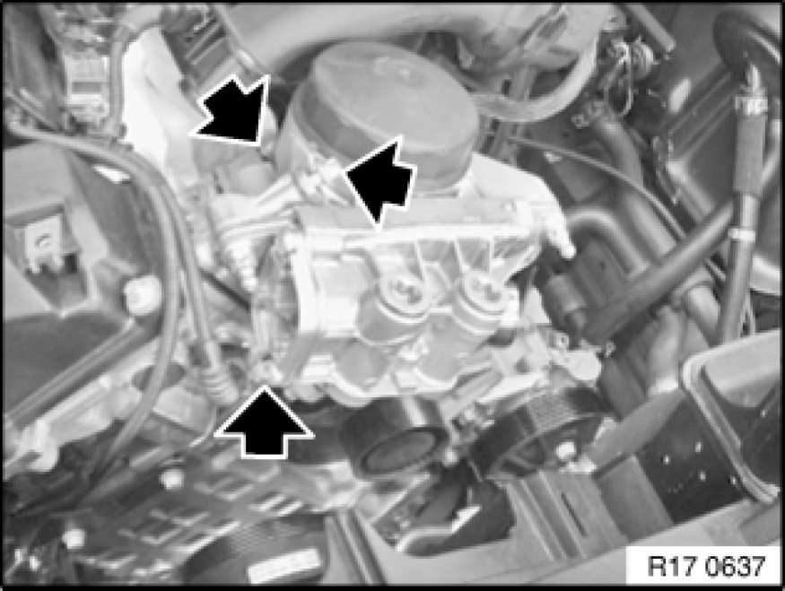
Mount oil filter housing on crankcase.
To facilitate mounting, remove coolant connection.
Installation:
Tightening torque 11 42 2AZ 11 42 Oil Filter Element with Connections.
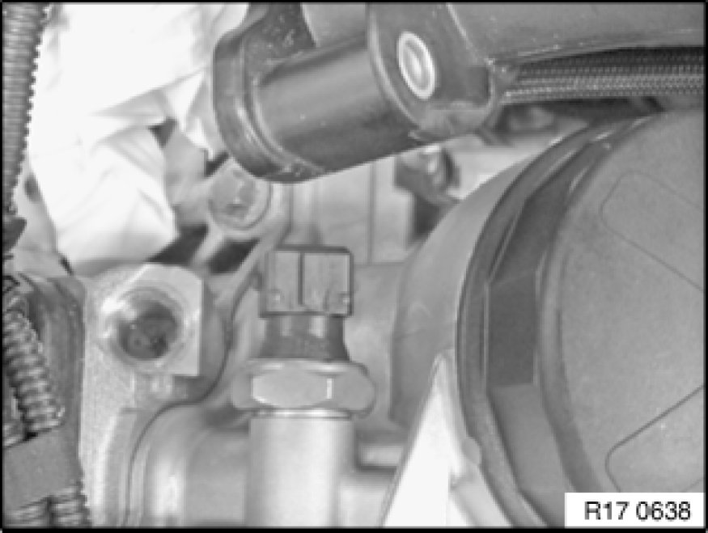
Mount oil pressure switch on new filter housing.
Installation:
Tightening torque 12 61 2AZ [1][2]12 61 Display for Oil Pressure, Oil Temperature, Oil Level Sensors / Switches.
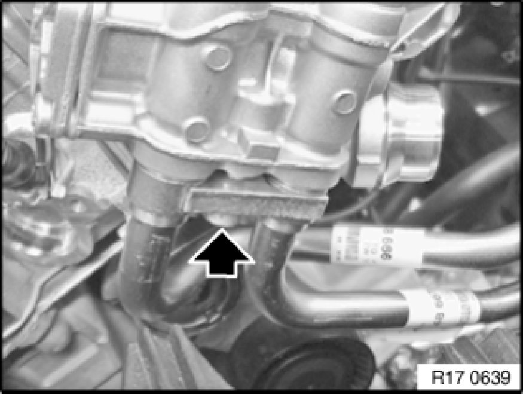
Mount sealing rings on oil supply and return lines.
Mount oil lines on filter housing (M8x28 screw).
Installation:
Lubricate sealing rings lightly with oil.
Tightening torque, 17 22 5AZ 17 22 Transmission Oil Cooler Lines.
Secure oil lines with pre-installed rubber grommet.
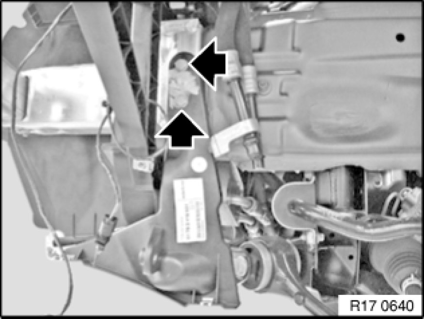
Remove underbody protection bracket.
Mount holding frame for engine oil cooler on crashbox.
There must be 2 press-in nuts for the radiator bracket on the crashbox, otherwise replace crashbox.
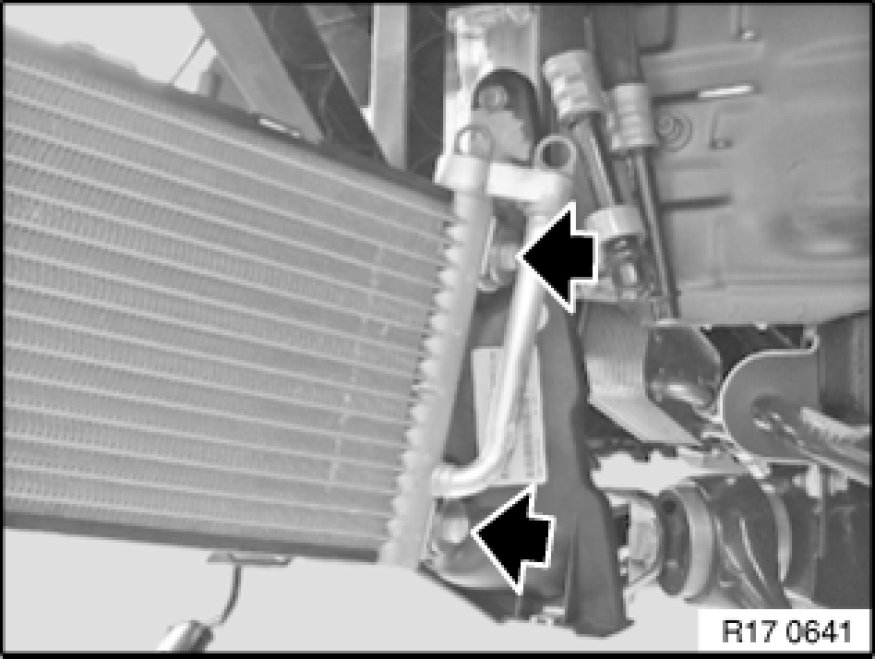
Mount engine oil cooler on oil cooler bracket (M8x35 screw).
Installation:
Tightening torque, 17 21 2AZ 17 21 Engine Oil Cooler.
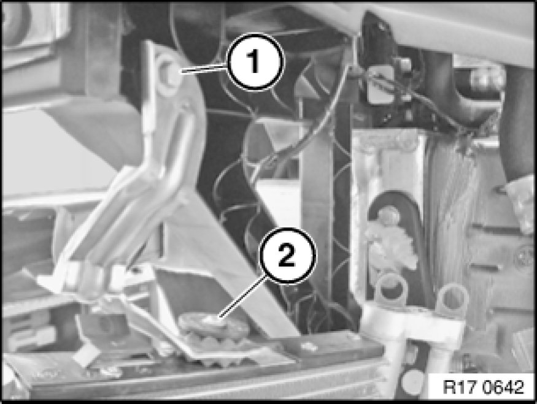
Mount wheel arch cooler bracket with vibration damper (rubber element).
Installation:
Tightening torque (1) 17 21 2AZ and (2) 17 21 3AZ 17 21 Engine Oil Cooler
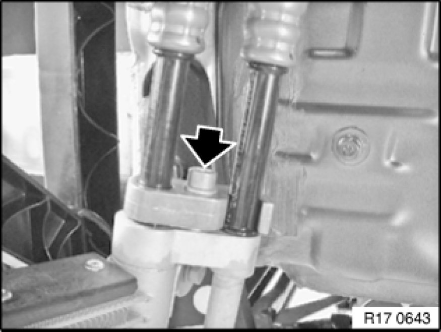
Mount sealing rings on oil supply and return lines.
Mount oil lines on engine oil cooler housing (M8x30 screw).
Installation:
Lubricate sealing rings lightly with oil.
Tightening torque, 17 22 5AZ.
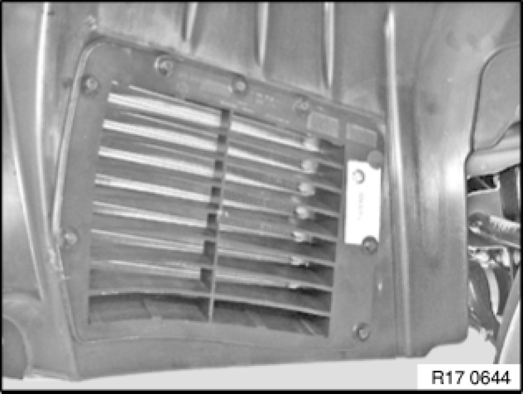
Mount wheel arch cover.
Mount dust lip.
Mount oil cooler protective grille in wheel arch cover.
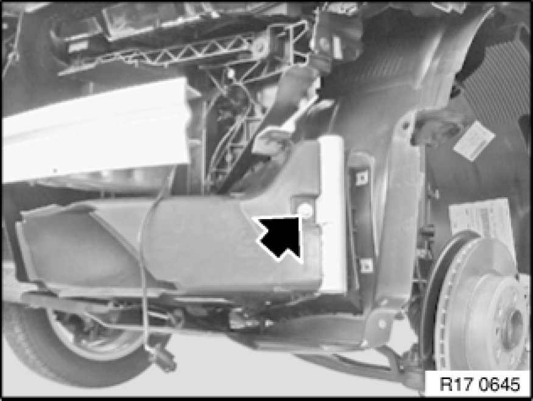
Mount air duct on engine oil cooler.
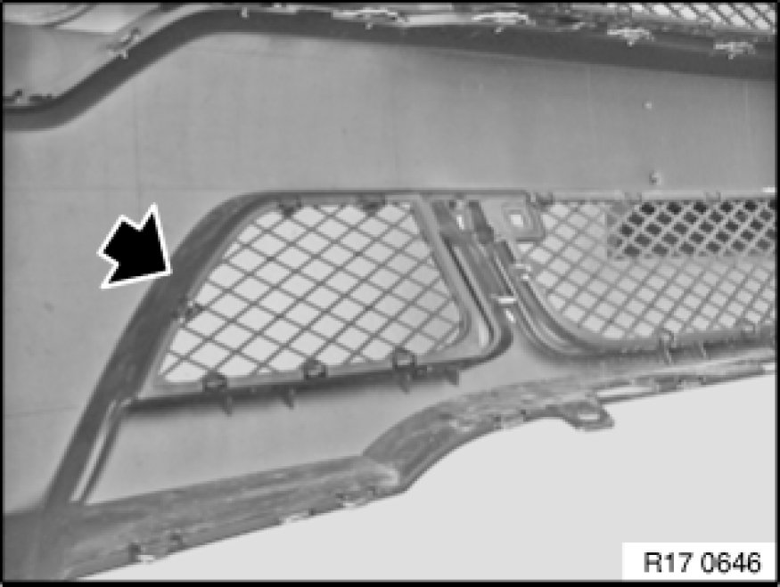
Replace closed cover in left bumper trim with grille panel.
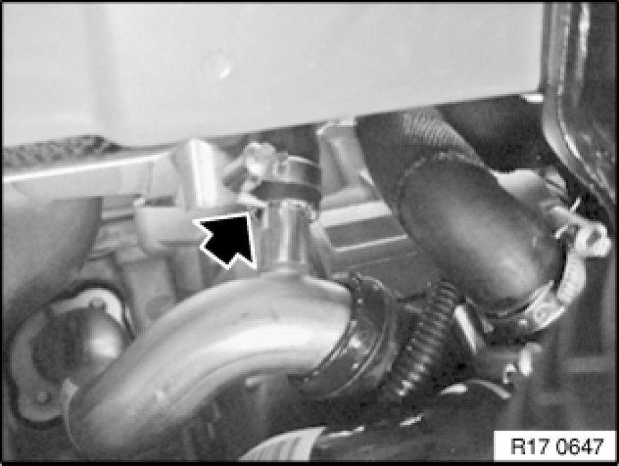
Remove coolant hose between coolant pump, coolant radiator and oil-water heat exchanger.
Install coolant hose between coolant pump and coolant radiator. Push hose onto coolant pump up to mechanical stop.

Add final details to vehicle
Fill coolant and engine oil systems
Data oil fill quantity [1][2]Capacity Specifications
The oil fill quantity is increased after installation of the supplementary cooler by 0.5 l.
Adapt DME data status Programming and Relearning
Note:
Now clear the fault memory.